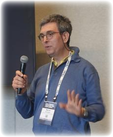
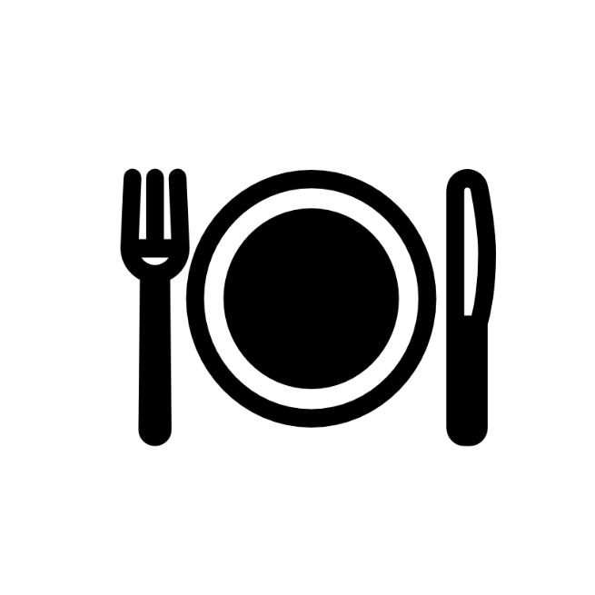

Program
Pers3S workshop spans a full day from 9am to 18h00, with a total of 4 sessions offering the opportunity to meet students, early career researchers, more experiences one and industrial stakeholders.
9h-10h30 Session 1

9h00 Amphithéâtre Roussy
NIOVA Distributed Block Storage Architecture
Bernd Schubert, NIOVA
TBA
9h30 Amphithéâtre Roussy
Rethinking the I/O Stack: Fast I/O Completion and User-Space Caching
Yu Liang
TBA
10h00 Amphithéâtre Roussy
Carbon Footprint of Storage in Data Centers: the Impact of Using SSDs for Key-Value Stores
Thomas Ropars, INRIA
TBA

10h30
** 30 minute break **
11h-12h00 Distinguished Young Researchers
11h00 Amphithéatre Roussy
THEIA: Scalable and Effective Data Prefetching for Geo-Distributed Erasure-Coded Storage
Marc Tranzer, INRIA
TBA
11h30 Amphithéâtre Roussy
VoliStorM: A Crash-Consistent I/O Cache with Two Kernels Instead of Two Caches
Jana Toljaga, Telecom SudParis
TBA
12h-12h30 Flash presentations poster introduction
12h00 Amphitéatre Roussy
TBA
TBA
Abstract to be provided
12h05 Amphitéatre Roussy
TBA
TBA

12h30
** 90 minute lunch break **
14h00-15h30 Session 2

14h00 Amphithéatre Roussy
I/O-Cool: Using I/Os for Temperature Regulation When Training on the Edge
Jalil Boukhobza
TBA

14h30 Amphitéatre Roussy
TOTO: Transparent I/O Tuning for HPC Applications
Francieli Boito, INRIA
TBA
15h00 Amphitéatre Roussy
TBA
TBA
TBA
15h30
** 30 minute break **
16h00-18h00 Session 3
16h00 Amphithéâtre Roussy
TBA
TBA
TBA
16h30 Amphitéatre Roussy
TBA
TBA
TBA
17h00 Amphitéatre Roussy
TBA
TBA
TBA
17h30 Amphitéatre Roussy
Closing Session: Reflection on storage from the last 10 years to the next ones!
TBA
TBA
Steering Committee
Since its inception 10 years ago, Per3S is managed by a steering committee, the committee is fluid and tends to evolve from an edition to the other.

François Trahay
Télécom SudParis / Institut Polytechnique de Paris
François Trahay is full professor at Télécom SudParis since 2011. He received his Ph.D. degree in computer science from the University of Bordeaux in 2009. He has been working on runtime systems for high performance computing since 2006. His research interests now mostly focus on performance analysis for HPC and distributed systems. He is the project leader and main developer of the EZTrace framework for performance analysis.
Jalil Boukhobza
ENSTA
Jalil Boukhobza is full professor at Sorbonne Université, Lip6 lab. His main research interests include storage system design, performance evaluation and energy optimization, and operating system design. He works on different application domains such as embedded systems, cloud computing, and database systems.
Shadi Ibrahim
Inria - Bretagne
Shadi Ibrahim is a Research Scientist at Inria. He obtained his Ph.D. degree in Computer Science from Huazhong University of Science and Technology (HUST) in Wuhan of China in 2011. His current research interests are in scalable data management, storage systems, data-intensive computing, parallel I/O and distributed file systems, virtualization technology and Cloud/Fog computing. Dr. Ibrahim received in 2020 the IEEE TCSC Award for Excellence in Scalable Computing (Middle Career Researcher), he's a Distinguished member of the ACM and a Senior member of IEEE.
Philippe Deniel
CEA-DAM
Philippe Deniel is heading the Storage Architecture and Systems Lab at CEA/DIF. His lab is in charge of managing the daily data production of both CEA/DIF data centers namely Tera and TGCC. Attentionality to manage daily production, the lab is also developing actively Lustre and HPSS. Philippe is the original developer of NFS-Ganesha an open-source NFS server in user space available in LGPLv3. Philippe is the Technical Coordinator the EuroHPC IO-Sea project.
Philippe Raipin
Orange Labs
Philippe is a Program Manager at Orange Research, leading projects on digital twin platforms. His expertise focuses on the architecture, performance, and scalability of massive data management. He specializes in optimizing storage systems, particularly the modeling and compaction of historical graphs. He applies semantic web standards and vector databases to structure complex network topologies. Through these methods, he actively shapes data standards for next-generation cognitive digital twins.